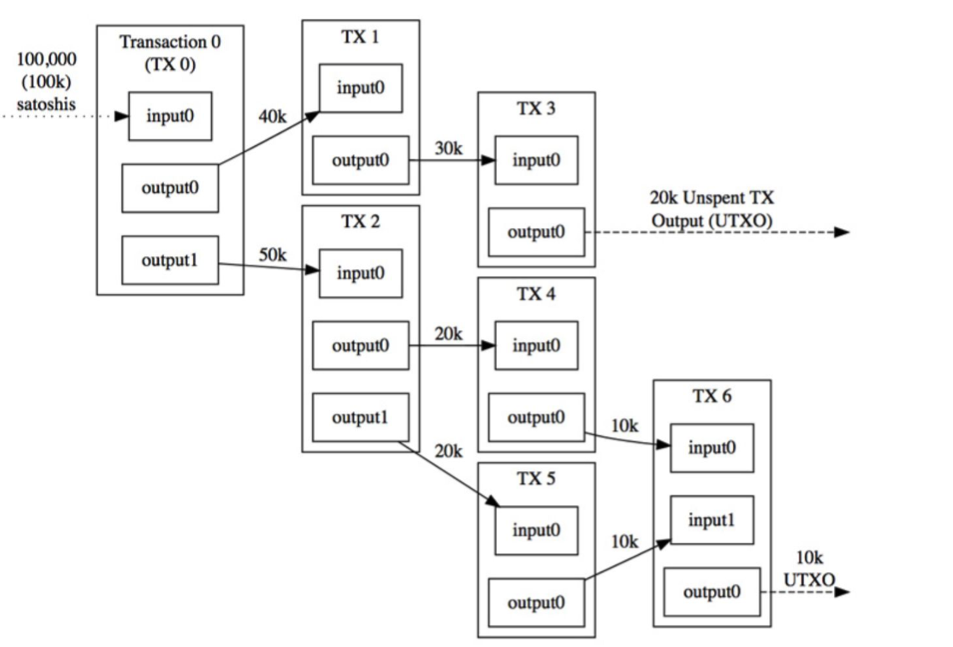

When someone sends a person a Bitcoin over the block chain, they are actually sending a hashed version of the "public key". On the other hand, a bitcoin private key is a large (256 bits) secret number that allows bitcoin to be unlocked and sent.
Besides these key pairs and a bitcoin wallet address, your bitcoin wallet also stores a separate log of all of your incoming and outgoing transactions. Every transaction linked to your address will be stored by the bitcoin wallet to give users an overview of their spending and receiving habits.
Theses are the steps for bitcoin protocol:
Whenever a tranaction occurs, the network records the addresses and amount sent from sender and receiver down on a ledger or blockchain.
The verification process is done by miners, or people that group up all the tranactions from the entire network into a single node, which is discussed in the mining page.
Each ledger is verified and broadcasted by multiple points in the network to ensure every computer has the correct copy of the block chain.
Bitcoin uses the UTXO model or Unspent output from bitcoin transactions. The model allows for an enviroment where parallel processing across multiple addresses is possible. The mechanism is a continual transgression of inputs and outputs, where the owner of tokens do not directly own the tokens, but rather owns the output to a specific number of tokens that can then be signed over as an input to a new owner, who controls the new outputs, as seen in the figure.
There are 3 rules to follow for UTXO:
1. Every transaction must prove that the sum of its inputs are greater than outputs
2. Every referenced input must be valid
3. Transactions must have digital signitures matching the owner input in every input
